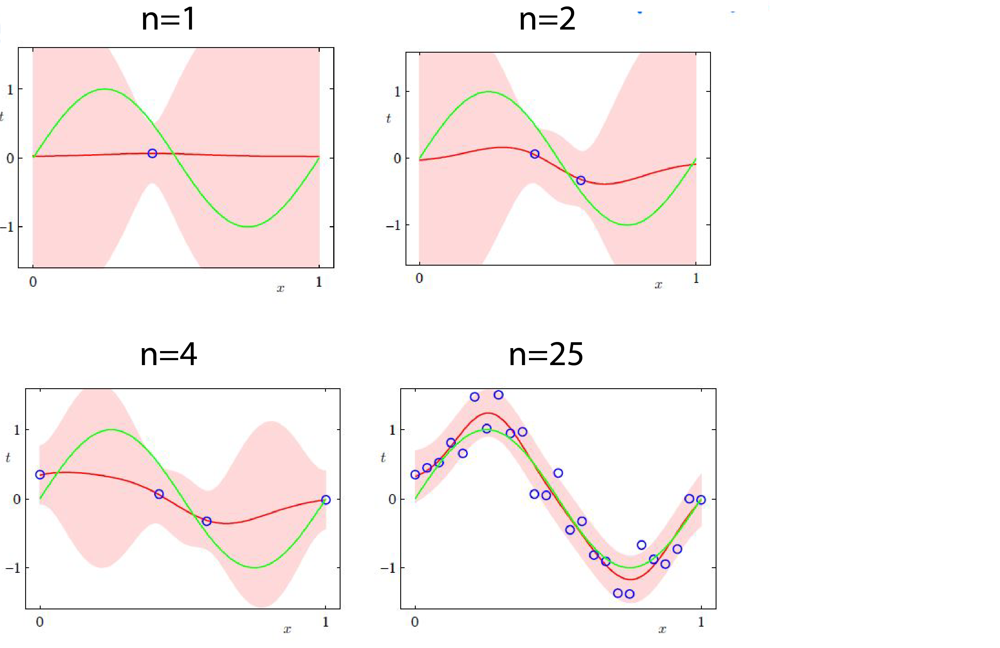

Posterior Inference
Bayesian Inference what can we do with posterior distribution $p(\theta|x)$ that we can not do with point estimate: For example we can estimate by $\theta_{\text{MAP}} = \arg \max_{\theta} p(\theta|x)$
1-Quantify Uncertainty Posterior variance typically decreases as $1/n$ when we see $n$ data points.
2-Posterior Mean $\theta_{\text{Mean}} = E_{P(\theta|x)}[\theta] = \int_{\mathcal{\theta}}\theta.p(\theta|x) d\theta$. Recall that if $\theta \sim p(\theta)$ and $x|\theta \sim p(x|\theta)$ we can define joint probability with $p(\theta,x) = p(\theta).p(x|\theta)$. Indeed, the posterior mean minimizes the mean square loss: $$ \theta_{\text{Mean}} = \arg \min_{\theta(x)} E[||\theta(x)-\theta||^2] $$
3-Posterior Median In a one dimensional space $\theta_{\text{Median}} = \theta^$ subject to $F(\theta^)=\int_{-\inf}^{\theta^*}p(\theta|x)d\theta=\frac{1}{2}$. In other words, posterior median minimizes the following loss: $$ \theta_{\text{Median}} = \arg \min_{\theta(x)} E[|\theta(x)-\theta|] $$
Conjugate Prior We say a prior distribution $p(\theta) \in F$ is a conjugate prior for a likelihood function $p(x|\theta)$ if the posterior is in the same family: $p(\theta|x) \in F$.
Examples
Beta-Bernoulli model Lets say $\theta \in [0,1]$ and $\theta \sim \text{Beta}(\alpha,\beta): p(\theta) \propto \theta^{\alpha-1}(1-\theta)^{\beta-1}$. $x \in {0,1}$ and $x|\theta \sim \text{Bernoulli}(\theta): p(x|\theta) = \theta^x (1-\theta)^{1-x}$. Therefore the posterior distribution equals:
$$ \begin{align} \begin{aligned} \theta| x \sim \text{Beta}(\alpha’,\beta’) : p(\theta|x) \propto \theta^{\alpha+x-1}(1-\theta)^{\beta-x} \\\ \alpha’ = \alpha+x \\\ \beta’ = \beta+1-x \\\ \end{aligned} \end{align} $$
Dirichlet-Multinomial: $$ \begin{align} \begin{aligned} \theta \in \Delta_k = {p=(p_1,..,p_k)}: p_i \geq 0, \sum_{i=1}^k = 1 \\\ x \in { 1,2,..,k} \end{aligned} \end{align} $$
Gaussian-Gaussian $$ \begin{align} \begin{aligned} \theta \in R^d , \theta \sim \text{Normal}(\mu,\sigma) \\\ x \in R^d , x|\theta \sim \text{Normal}(\theta,\epsilon I ) \end{aligned} \end{align} $$
Bayesian Linear Regression
Recall ridge regression: $y=w.x$: $$ \begin{align} \begin{aligned} w^{\text{ridge}} = & \arg \min{w\in R^d} \frac{1}{2} \sum_{i=1}^n (y_i-w.x_i)^2+\frac{\lambda}{2}||w||2^2\\\ = & \arg\min{w\in R^d} \frac{1}{2}||y-X^Tw||_2^2 + \frac{\lambda}{2} ||w||_2^2 \end{aligned} \end{align} $$ where $X=(x_1,..,x_n) \in R^{d\times n}$. Remember that the solution for this problem was $w^_{\text{ridge}} = (XX^T+\lambda I )^{-1}Xy$
Recall probabilistic model: prior is $w \sim \text{Normal}(0,\frac{\sigma^2}{\lambda}I) \in R^d$. Likelihood is $y | x,w \sim \text{Normal}(x.w,\sigma^2) \in R$. This is analogous to $y_i = w.x_i+\epsilon_i$ for $\epsilon_i \in \text{Normal}(0,1)$. Then $p(w) \propto \exp(-\frac{\lambda ||w||^2}{2\sigma^2})$. Therefore prediction for datapoint $x_i$ is $p(y_i| x_i,w) \propto \exp(-\frac{(y_i-w.x_i)^2}{2\sigma^2}) \forall i=1,..,n$. Let $y=(y_1,..,y_n)$ and $x=(x_1,..,x_n)$. $$ \begin{align} \begin{aligned} p(y|x,w) = & p(y_1| x_1,w) .. p(y_n| x_n,w)\\\ \propto &\prod_{i=1}^n \exp (-\frac{(y_i-w.x_i)^2}{2\sigma^2}) \\\ = & \exp (-\frac{1}{2\sigma^2}\sum_{i=1}^n (y_i-w.x_i)^2) \\\ = & \exp (-\frac{1}{2\sigma^2} ||y-x^Tw||^2_2) \end{aligned} \end{align} $$
Then posterior is: $$ \begin{align} \begin{aligned} p(w|y,x) \propto & p(w).p(y| x,w)\\\ \propto & \exp(-\frac{\lambda}{2\sigma^2}||w||^2).\exp(-\frac{1}{2\sigma^2}||y-x^Tw||^2_2) \\\ =& \exp(-\frac{1}{2\sigma^2}(||y-x^Tw||^2+\lambda ||w||^2)) \end{aligned} \end{align} $$
recall that $(||y-x^Tw||^2+\lambda ||w||^2)$ is objective function in ridge regression. So the minimizer is $w^*_{\text{ridge}}$. Therefore $p(w|y,x) = \text{Normal}(\mu,\sigma)$ for some $\mu \in R^d$ and $\Sigma >0$. What is $\mu$ and $\Sigma$?
$\mu= \text{mean} p(w|y,x) = \text{mean Gaussian} = \text{mode Gaussian} = w^*_{\text{ridge}}$. In other words: $$ \begin{align} \begin{aligned} \mu = (xx^T+\lambda I )^{-1}xy\\\ \Sigma = \sigma^2(xx^T+\lambda I)^{-1} \end{aligned} \end{align} $$
So the posterior in Bayesian Linear Regression is:
$$ \begin{align} \begin{aligned} w \sim \text{Normal}(0,\frac{\sigma^2}{\lambda}I)\\\ w | y,x \sim \text{Normal}((xx^T+\lambda I)^{-1}xy,\sigma^2(xx^T+\lambda I)^{-1}) \end{aligned} \end{align} $$
Recall that $x=(x_1,..,x_n)$ and $xx^T=(x_1,..,x_n)(x_1,..,x_n)^T=\sum_{i=1}^{n}x_ix_i^T$. For $d=1$ $xx^T=x_1^2+..x_n^2$ and variance is $\frac{\sigma^2}{x_1^2+..x_n^2+\lambda}=O(\frac{1}{n})$. Here are some examples of posterior predictive distribution:

We covered this post in the introduction to machine learning CPCS 481/581, Yale University, Andre Wibisono where I (joint with Siddharth Mitra) was TF.